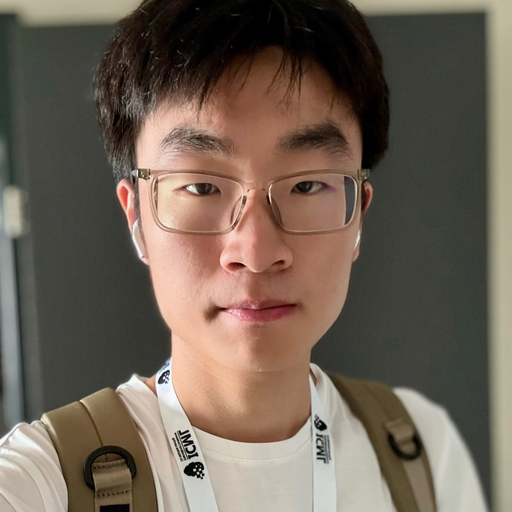

News
1 May 2025
Two full papers are accepted by ICML'25 on LLM alignment and auction learning.
1 May 2024
One full paper is accepted by ICML'24 on auction learning.
|  |
Kexin Huang
PhD student
Lab of Data Science 443 Huangshan Road, Hefei, China 230027
Advisor: Prof. Xiangnan He and Prof. Xiang Wang |

I am currently in the 3th year of my PhD program at USTC Lab for Data Science, supervised by Prof. Xiangnan He and Prof. Xiang Wang.
My research focuses on advancing large language models (LLMs) through post-training techniques, e.g., reinforcement learning.
Education
|
University of Science and Technology of China (USTC) PhD Candidate in School of AI and Data Science 2023.09 - 2028.06 (Expected) Advisor: Prof. Xiangnan He and Prof. Xiang Wang |
|
University of Science and Technology of China (USTC) Bachelor in School of Computer Sciences 2019.09 - 2023.06 Advisor: Prof. Xiangnan He |
Publications
In the Year of 2025: |
Larger or Smaller Reward Margins to Select Preferences for Alignment? Kexin Huang, Junkang Wu, Ziqian Chen, Xue Wang, Jinyang Gao, Bolin Ding, Jiancan Wu, Xiangnan He, Xiang Wang ICML 2025 (Full, Accept Rate: 26.9%) [PDF] [Codes] |
Preprints
|
RePO: ReLU-based Preference Optimization Junkang Wu, Kexin Huang, Xue Wang, Jinyang Gao, Bolin Ding, Jiancan Wu, Xiangnan He, Xiang Wang arxiv 2025 [PDF] [Codes] |
Experiences
| Research Intern, Alibaba Tongyi Lab, Hangzhou, April 2023 - Present Mentor: Guoyin Wang, Xue Wang, Jinyang Gao |
| Teacher Assistant for Graph Theory, University of Science and Technology of China, 2022 Teaching Professor: Yinlong Xu |
Services
|
Invited Reviewer of Conferences/Journals 2025: ICLR, TKDE |
Honors
|
SIGIR'23 Best Paper Honorable Mention, 2023.05 - University of Science and Technology of China |
Webpage template borrows from Xiangnan He.